| Home | Kontakt | Steckbrief |
| Wandern/Trekking |
| Klettern/Klettersteige |
| Kanu |
| Fahrradtouren |
|
| Rucksack-Reisen |
| Touren mit Kindern |
| Wissenswertes |
In der Rubrik Rucksack-Reisen befinden sich Touren des Veranstalters
Rucksack-Reisen, die ich als Tourbegleiter betreut habe.
Seekajakwoche auf dem Vänern
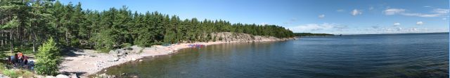
Ausgangspunkt der Kanuwochen des Reiseveranstalters Rucksack-Reisen ist das Aktivcamp in Stömne. Die Seekajakwoche beginnt am Samstag mit der Ankunft der Gäste und endet Freitagnachmittags mit der Reinigung und Einlagerung der Ausrüstung. Die Seekajakwoche habe ich im Jahre 2007 erstmalig begleitet, und die Tour war nicht nur für mich, sondern auch für die Gäste eine Herausforderung. Ankunft, Kennen lernen, Theorie und PraxisNach Ankunft und Frühstück gibt es gegen 10 Uhr das erste offizielle Aufeinandertreffen von Gästen und Tourbegleiter. Der gesättigte Gast muss jetzt etwas Theorie über sich ergehen lassen. Der Ablauf der Reise, Jedermannsrecht mit Rechten und Pflichten, Tipps über die benötigten persönlichen Dinge, Schwimmwestenpflicht, Sicherheitshinweise, geplanter Ablauf der Tour und vieles, vieles mehr. Schnell wird es aber etwas praktischer, und wir nehmen ersten Kontakt zu den Booten und der Ausrüstung auf. Schon sieht man mehrere Fragezeichen über den Köpfen. Wie soll denn mein Privatkram plus die Ausrüstung plus die Lebensmittel in so wenig Stauraum passen?
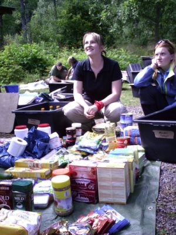
Dies ist nur ein Teil der Lebensmittel, die für eine Woche mitkommen Es wird kräftig diskutiert, lamentiert und aussortiert. 10 Rollen Multivitamintabletten brauchen wir nun wirklich nicht. Kommen wir mit weniger Toilettenpapier aus? Kennt jemand ein Rezept mit Corned Beef? Wie viel Kaffee- und wie viel Teetrinker sind im Team? Mehr Vegetarier als Fleischesser? Was macht man mit dem Trockengemüse? Darf ich als Fleischesser Sojaflocken essen? Hat jemand bestimmte Lebensmittelunverträglichkeiten? Reicht das Nutella? Passt die Schwimmweste auch farblich zu meinem Typ? Wie lang muss ein Paddel sein? Was ist der Unterschied zwischen einem links- und einem rechtsgedrehten Paddel? Muss die Spritzdecke so schwer drauf gehen? Erstaunlicherweise nehmen die Seekajaks doch alles Material auf, und so rollen wir nach einigen Stunden auf Bootswagen von der Basis aus runter zum See vor der Haustür.
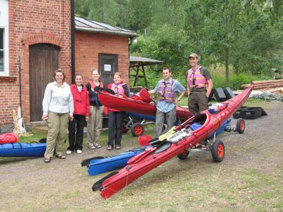
Auf die Plätze, fertig, könnte losgehen - aber Halt - erst das Vorherbild. Am heutigen Tag steht noch ein wenig praktisches Paddel- und Sicherheitstraining an. Nachdem wir das Camp eingerichtet haben, ziehen wir uns Badebekleidung an und üben zuerst den Ausstieg aus einem gekenterten Boot. Es kostet schon ein wenig Überwindung, das Boot umzukippen, denn das Wasser ist recht frisch. Jeder schafft aber den Ausstieg.
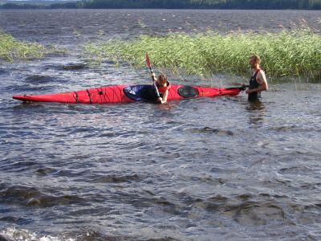
Richtiges kentern will gelernt sein Dann üben wir noch eine Wiedereinstiegstechnik, denn richtig aussteigen ist schon mal schön, aber schnell wieder ins trockene Boot kommen, ist fast noch wichtiger. Die ganze Zeit herrscht starker Südwestwind und erschwert die Übungen etwas bzw. macht sie realistischer. Nach dem Abendessen fallen dann alle reichlich müde in den Schlafsack und fragen sich, ob sie wohl die richtige Tour gebucht haben. Transfer zum Vänern nach Säffle, Wind und WellenAm nächsten Morgen paddeln wir zurück zum Steg, und auf dem Stück üben wir noch das Abschleppen eines erschöpfen Paddlers per Wurfsack. Den erschöpften Paddler darf ich spielen und die Abschlepper abwechselnd die Reiseteilnehmer. Ein sehr angenehmer Start in den Tag.Wir verladen die Boote auf einen Trailer und werden Richtung Süden zum Vänern gefahren. Dort gibt es südlich von Säffle eine Slipanlage, wo wir gemütlich einsetzen können. Wir stärken uns noch kurz mit einem Kaffee und ein paar Broten, und dann wird es ernst. Der Wind ist nach wie vor ziemlich stark und kommt weiterhin aus Südwest. Da der Vänern etwa zehnmal so groß wie der Bodensee ist, entstehen also bei den Bedingungen am Nordende entsprechend hohe Wellen. Wir entscheiden uns daher, nicht an der Halbinsel Värmlandsnäs entlang zu paddeln, sondern am Westufer entlang Richtung Mellerud. Das hat den Vorteil, dass wir nicht ganz so hohe Wellen zu erwarten haben, die auch noch von vorne kommen und nicht seitlich. Auch an dieser Küste hat man es mit vielen Schäreninseln zu tun, und man durchquert zwei Naturschutzgebiete.
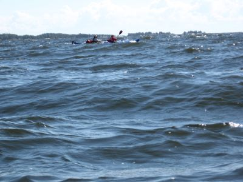
Wenn ich den See seh, brauch ich kein Meer mehr. Nach circa 3 Stunden Paddelei, in denen wir nur 7 Kilometer schaffen und von den Wellen reichlich durchgeschüttelt werden, beschließen wir uns einen Platz für die Nacht zu suchen. Wir finden etwas Passendes am Ufer und richten uns ein. Abends gibt es dann Chili con Carne ohne Carne sondern mit Sojaflocken, und wir lassen die Wellen in den Erzählungen höher und höher werden. Paddlerlatein halt. Südwärts, der Sonne entgegenDie nächsten Tage verbringen wir damit aufzustehen, zu frühstücken, Zelte abzubauen, Boote zu beladen, zu paddeln, eine Stelle für die nächste Nacht zu suchen, Zelte aufzubauen, zu kochen, zu quatschen und in den Schlafsack zu kriechen. Wir finden gute Rastplätze (Sandstrand mit Feuerstelle und Bank und reichlich Blaubeeren) und auch weniger gute Plätze (zerklüftete Granitplatte mit Wasserlöchern und Mückengarantie). Kurz gesagt. Wir erholen uns und genießen die brüllende Stille. In weiter Entfernung hören wir die Eisenbahn und die Straße zwischen Mellerud und Säffle. Der Wind wird von Tag zu Tag schwächer, bzw. wir gewöhnen uns daran und sind schon fast in den Booten zu Hause. Wir bestaunen jeden Mondaufgang und jeden sich stundenlang hinziehenden Sonnenuntergang.
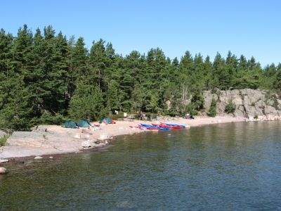
Sandstrand, Feuerstelle, Sitzgelegenheit, Blaubeeren - es fehlt nichts
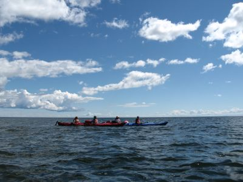
Endlose Weite und bestes Wetter
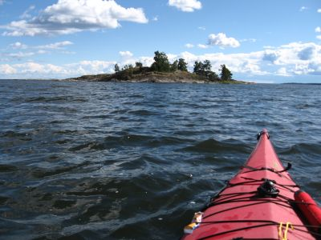
Kleine Inseln ziehen vorüber
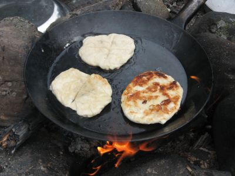
Frische Brötchen bereichern den Speiseplan
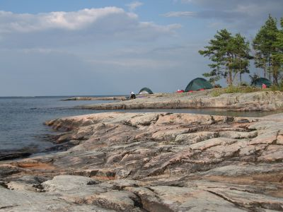
Der letzte Abend kommt zu schnell Eine Woche kann so kurz seinDie Woche geht viel zu schnell vorüber, und an einem Campingplatz, westlich von Mellerud paddeln wir an Land. Dort kommt auch bald unser Fahrzeug mit dem Trailer an, das uns und die Boote zurück nach Stömne bringt. Eine Woche voller Erlebnisse ist vorüber.
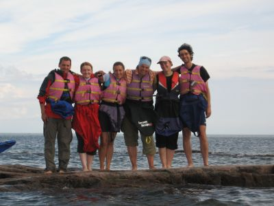
Das Nachherbild Links:Reiseinformation von Rucksack-ReisenVita Sandars Camping in Mellerud Seekajakforum Das schwedische Landesvermessungsamt - die Kartenquelle |